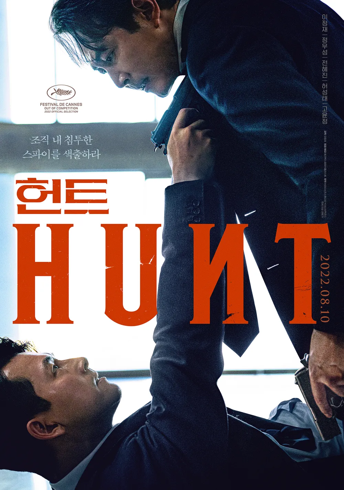
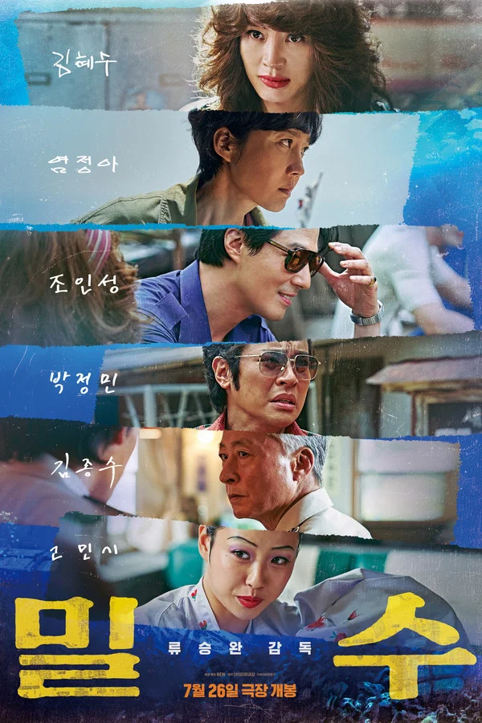

당신은 이미,
여름을 즐겁게 보내는 방법을 알고 있다.
이번 기획 「당신에게 뜨거운 여름을」은 무더운 여름을 보내는 방법으로 시작했습니다. 손에 땀을 쥐게 하는 액션, 낭만이 가득한 모험, 심장을 옥죄며 서늘함을 느끼게 하는 범죄 스릴러, 여름을 꿈꾸는 연인과 애니메이션으로 스무 편의 영화를 정리했습니다.
어떤 것을 보더라도 좋습니다. 낭만이 함께하는 모험도 좋고, 연인들의 아름다운 순간을 보아도 좋습니다. 당신의 이 보다 다채로워지길 바라며, 손에 닿은 여름들을 골라보시기 바랍니다.
01이열치열,
뜨거운 열정
뜨거운 열정
02숨을 죄이는
진득함
진득함
03미지를 탐사하는
낭만
낭만
04은하수 아래의
연인들
연인들
05상상이
함께하는 밤
함께하는 밤
01
이열치열, 뜨거운 열정
더운 여름을 더욱 뜨겁게. 심장을 뛰게 하는 거친 움직임
더위를 해결하는 방법 중 가장 뜨거운 방법. 열정은 모든 것을 해결한다.

탑 건: 매버릭
30여 년 만에 전설적인 파일럿으로 돌아온 매버릭의 마지막 비행을 담은 압도적인 공중 액션 블록버스터.

헌트
조직 내 숨어든 스파이 '동림'을 색출하기 위해 서로를 의심하는 안기부 요원들. 격동의 시대 속 신념과 생존을 두고 벌이는 인물들의 강렬한 심리전.

분노의 질주: 홉스 & 쇼
세상을 위협하는 바이러스 탈취를 막기 위해 뭉친 N극과 S극의 요원들이 벌이는 압도적 스케일의 추격전.

툼 레이더
사라진 아버지의 행방을 찾기 위해 떠난 미지의 섬에서 펼쳐지는 고고학자 라라 크로프트의 액션 어드벤처. 전설의 유물의 비밀을 파헤치려는 비밀 조직에 맞서다.
02
미지를 탐사하는 낭만
세상의 끝에서 마주하는 가장 거대한 모험
낯선 환경에 발을 디딘 탐험가가 겪는 경이로운 사건과 인간의 생존 의지.

캐리비안의 해적: 죽은 자는 말이 없다
모든 해적들을 몰살하려는 바다의 학살자 '살라자르'에 맞서, 포세이돈의 삼지창을 찾기 위한 잭 스패로우의 모험.

쥬만지: 새로운 세계
낡은 게임기 속에 들어가, 게임 캐릭터가 되어 정글을 탐험하는 아이들. 주어진 미션을 완수하고 현실 세계로 돌아가기 위해 분투하는 모험기.

스타워즈: 깨어난 포스
전설 제다이 루크 스카이워커가 사라지고, 어둠의 세력 퍼스트 오더에 맞서 새로운 희망을 품은 이들이 운명적으로 만나는 거대한 우주 대서사시.

퓨리오사: 매드맥스 사가
아포칼립스 시대의 폭군 디멘투스에게 납치된 퓨리오사가 고향으로 돌아가기 위해 처절한 복수를 다짐하며 성장하는 대서사시.

쥬라기 월드: 도미니언
인간과 공룡이 공존하게 된 혼돈의 시대 속에서 펼쳐지는 거대한 모험. 인류의 생존을 위협하는 위기에 맞서 지구의 운명을 건 최후의 사투.
03
숨을 죄이는 진득함
선과 악. 욕망의 경계에서 벌어지는 치열한 추격과 심리전
인간 내면의 뒤틀린 욕망과 범죄의 서늘한 이면을 날카롭게 기록한다.

다만 악에서 구하소서
죄를 짓는 자와 구원을 찾는 자. 피할 수 없는 악연 속에서 서로를 파멸로 몰아넣는 두 남자의 처절한 사투.

23 아이덴티티
23개의 다중인격을 가진 납치범 케인에게 감근된 소녀들의 탈출기. 평범한 일상이 공포로 뒤바뀌는 서늘한 심리 스릴러.

범죄도시 2
괴물 형사 마석도가 베트남까지 장악한 빌런 강해상과 맞서 펼치는 소탕전. 거침 없는 액션과 재치 있는 입담, 압도적 힘의 카타르시스가 인상적.

밀수
바다에 던져진 생필품을 건지며 생계를 잇던 해녀들이 일생일대의 범죄판에 휘말리며 벌어지는 해양 범죄활극.

종이달
우연히 은행 돈에 손을 대며 범죄의 늪에 빠진 평범한 주부 리카. 안온한 일상에서 파국으로 내달리는 뒤틀린 욕망을 세밀히 조명한다.
04
은하수 아래의 연인들
찰나의 순간이 영원이 되는 사랑의 기록
만남과 이별, 그리고 시간에 바래지 않는 감정의 결을 읽는다.

너의 결혼식
첫사랑을 향한 열 번의 엇갈림 끝에 마주한 운명. 사랑은 타이밍이라고 말하는 두 남녀의 10년 서사.

오늘 밤, 세계에서 이 사랑이 사라진다 해도
자고 일어나면 기억이 사라지는 소녀와, 그녀를 지키기 위해 거짓 사랑을 시작한 소년. 서로를 향한 마음만큼은 잊지 않으려는 애절한 마음.

사랑도 통역이 되나요
낯선 도시 도쿄에서 우연히 만나, 서로를 통해 공허함을 채우는 두 이방인의 만남. 언어의 장벽을 넘어 이어지는, 짧지만 깊은 위로의 순간.

(잊지 마 내가,) 너와 사랑한 시간
삶의 모든 순간이 사랑이었던 연인의 기억이 흐려지는 과정. 흩어지는 추억을 붙잡으려는 간절한 마음.
05
상상이 함께하는 밤
꿈꾸던 세계가 현실이 되는 시간
경계를 허무는 환상적인 서사로 잊고 있던 순수한 감각을 깨운다.

날씨의 아이
비가 그치지 않는 도쿄, 기도만으로 날씨를 맑게 하는 소녀를 만난 소년. 세상의 균형을 뒤흔들며 선택한 두 사람의 운명.

장화 신은 고양이: 끝내주는 모험
아홉 개의 목숨 중 마지막 하나만을 남긴 장화 신은 고양이의 잃어버린 목숨을 되찾기 위해 떠나는 거대한 여정.
추천DVD 이용 안내
온라인에서 목록을 확인하고, 도서관에서 영화를 만나보세요
추천DVD 20편의 소장 위치와 대출 상태는 도서관 홈페이지에서 확인할 수 있습니다.
추천DVD 서가
중앙디지털도서관 1층
추천DVD 서가에서 영화를 직접 만나보세요.
2026년 7월 1일–8월 31일
기간2026년 7월 1일–8월 31일
구성추천DVD 20편 · 5개 주제
대상제주대학교 구성원
이 책들을 권하며
우리는 스크린을 통해 미지의 세계를 경험합니다. 장면을 넘길 때마다 새로운 추억이 쌓여가고, 그 기록들은 훗날 다시 꺼내 볼 계절의 풍경이 됩니다. 「당신에게 뜨거운 여름을」은 뜨거운 태양 아래 시작된 모험에서 시원한 밤바람 같은 감동과 스릴을 선물하며 일상으로 돌아오는 시네마 여행입니다. 이 여름, 한 편의 영화가 당신의 기억 속에 가장 뜨거우면서도 인상적인 페이지로 기록되길 바랍니다.
— 제주대학교 중앙도서관